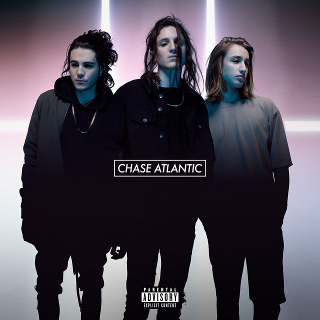

MUSIC: Chase Atlantic
⇦
⇨

2011–2013: Before Chase atlantic
Christian Anthony and Mitchel Cave were in a boy band called What About Tonight. They formed the band to audition for season 4 of The X Factor Australia, although they were eliminated in week two, coming in eleventh place.[1][2]
Mitchel Cave's older brother, Clinton Cave, had a successful YouTube channel, Clinton Cave Music, where the brothers would release cover songs on a regular basis.[3] In 2013, the three members performed together for the first time under the name K.I.D.S. (Kind Imaginations. Destructive Situations.) and released the original song "Addicted."[4] They have since deleted all content from the channel.[5]

2014–2015: Dalliance and Nostalgia
The trio first released music under the name Chase Atlantic when Clinton Cave recruited Mitchel and Christian to assist recording a university project.[6] The band would get their name, Chase Atlantic from nowhere. According to Mitchel, the name Chase Atlantic means nothing, it was a combination of two words that the band members really liked, Chase and Atlantic, "We spend a couple of minutes trying to come up with a plausible and profound explanation for their band name. “[Chase Atlantic] literally means nothing,” says Cave. “It’s so hard to find band names, we just put two words we really liked together that can’t be associated with anything else.”.[7] Chase Atlantic officially released the EP Dalliance on 26 May 2014.[8] Their early sound was often described as Pop Rock and Pop Punk.[9]
In February 2015, the band released their second EP, Nostalgia.[10] Their song "Friends" was featured in several Tumblr edits.[11] The song was certified Silver by the British Phonographic Industry (BPI) in 2022.[12]
Later in 2015, the band caught the eye of Benji and Joel Madden, and they signed the group to their management company, MDDN, in early 2016.[13]